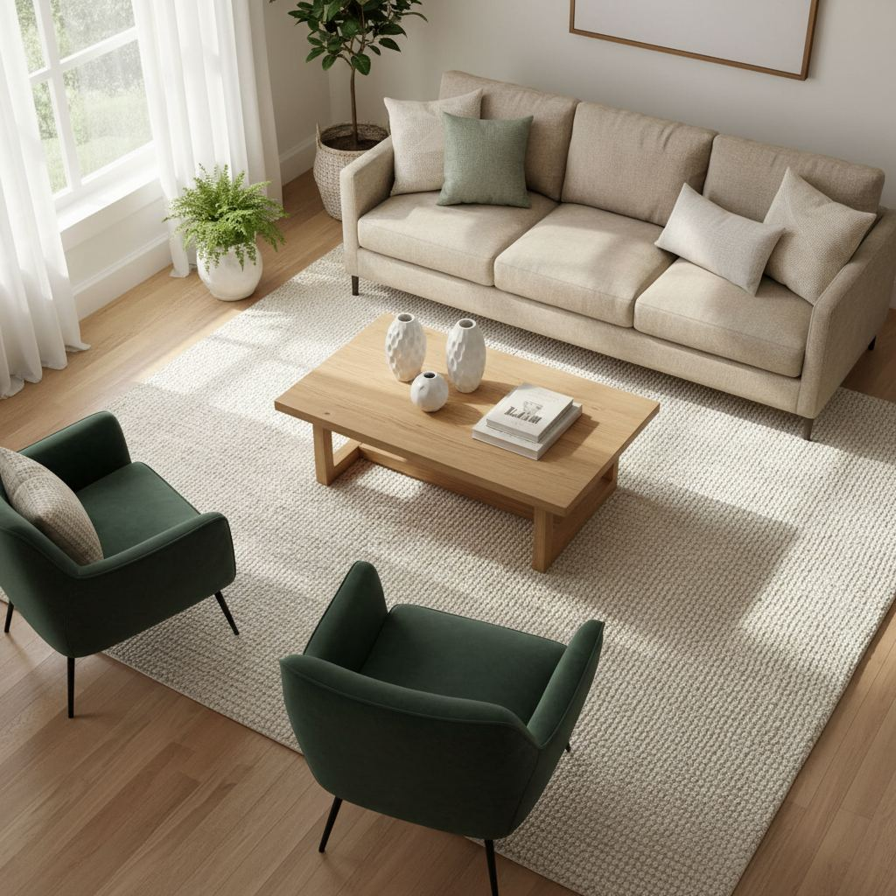

Living Room Rug Size Guide (With Real Room Examples)

The single most common decorating mistake is a rug that is too small. Small rugs cut the room into fragments and make furniture look like it is drifting. Here is the shortcut we use on shoots to size a rug correctly the first time.
The one-rule shortcut
At minimum, the front legs of every seat in the main seating group should sit on the rug. Ideally, all four legs sit on it, with 12–18 inches of rug showing around the seating group.
Standard sizes explained
- 5x8: only appropriate under a coffee table in very small rooms.
- 8x10: the workhorse size for most standard living rooms.
- 9x12: right for larger rooms with a full sofa-and-chairs grouping.
- 10x14 or larger: open-plan spaces and great rooms.
Sizing by layout
For a sofa-plus-two-chairs arrangement in a 14x16 room, an 8x10 is usually the minimum and a 9x12 is often better. For a sectional, measure the outside edges and add 24 inches on the open sides.
Rectangle vs round
Round rugs work best under round dining tables and in reading nooks. In a full living room, rectangles almost always win because they mirror the shape of the sofa.

Understanding Rug Materials and Pile
Beyond the sheer square footage, the material and pile height of your living room rug significantly impact its perceived size, comfort, and durability. A plush, high-pile wool rug, for instance, in an 8x10 size will feel more substantial and luxurious than a flat-weave cotton rug of the same dimensions. Consider a hand-knotted wool rug for high-traffic areas; its density and natural lanolin repel dirt, making it a wise long-term investment, though prices start around $800-$1000 for an 8x10. For a more casual, layered look, a jute or sisal rug can ground a space without overwhelming it, often costing $200-$400 for an 8x10. Synthetic options like polypropylene offer stain resistance and affordability, with 8x10s typically ranging from $150-$300, ideal for homes with pets or children. The fiber's drape and how it catches light will also influence the rug's visual weight. A glossy viscose or silk blend, even with a low pile, can appear more expansive due to its reflective quality, but these are less forgiving of spills.
When selecting a material, think about your lifestyle. A low-pile rug is easier to vacuum and move furniture over, while a high-pile shag offers a cozy, sink-your-toes-in feel, but may require more diligent cleaning. If you're layering, a flat-weave or jute base provides a stable foundation for a smaller, softer top rug.
Budgeting for Your Ideal Rug
Living room rugs represent a significant investment, so allocate your budget wisely. Prices generally correlate with size, material, and construction method. A machine-made synthetic 5x7 rug might cost $75-$150, while a hand-tufted wool iteration of the same size could be $300-$600. Scaling up to a common 9x12, a quality machine-loomed wool blend could be $500-$900, with a hand-knotted piece easily reaching $2,000-$5,000 or more, depending on origin and knot count. Don't forget to factor in a rug pad, which adds $30-$100 depending on size and thickness, but is crucial for preventing slips, increasing comfort, and protecting your flooring beneath. Consider your desired lifespan for the rug. A trendy, inexpensive piece might be perfect for a few years, but a timeless, well-made rug can last decades, making its higher upfront cost a better value long-term. Look for sales, especially around major holidays, and explore outlet stores or online marketplaces for discounted quality pieces.
Prioritize the largest rug your space can comfortably accommodate within your budget, as a too-small rug is a common design misstep. If a large, high-end rug is out of reach, consider layering a smaller, premium rug over a larger, more economical base rug, like a jute or sisal, to achieve a similar visual impact and comfort level without the full expense.
Common Rug Placement Mistakes to Avoid
Even with the right size, incorrect placement can derail your living room's aesthetic and functionality. One frequent misstep is the 'postage stamp' rug – a small rug isolated in the center of the room, far from any furniture. This makes the space feel disconnected and smaller. Aim to have at least the front legs of all primary seating furniture (sofa, armchairs) on the rug. For a sofa, this means 6-8 inches of the front legs should rest securely on the rug, grounding the seating arrangement.
- Floating dining sets: If your living room doubles as a dining area, ensure the rug is large enough so that chairs remain fully on the rug even when pulled out.
- Obscuring pathways: An oversized rug that extends too far into high-traffic pathways can become a trip hazard and make movement feel constricted. Leave at least 18-24 inches of clear flooring around the perimeter in walkways.
- Ignoring doorways: Avoid placing a thick rug directly in front of a frequently used doorway, as it can obstruct the door's swing.
- Mismatched proportions: A long, narrow rug in a square room, or vice versa, can create an imbalance. Match the rug's shape to the dominant shape of the furniture grouping or the room itself.
Always measure your furniture layout and sketch it out before purchasing to visualize scale.
Step-by-Step: Measuring for Your Living Room
Before you even consider rug styles, an accurate measurement of your living room and its existing furniture layout is paramount. Don't eyeball it. Grab a tape measure, a notepad, and a pencil.
Step 1: Map Your Core Seating Area
Visually define the primary conversational zone – typically your sofa, armchairs, and coffee table. Measure the total length and width of this entire grouping, including the space in front of the sofa for the coffee table. For example, if your sofa is 90 inches wide and your two armchairs are 36 inches wide each, and they face each other with a 48-inch-long coffee table in between, your minimum ideal rug width might be designed to encompass the sofa and the depth of the coffee table, around 90-100 inches, and length to capture the armchairs, say 120-144 inches.
Step 2: Account for Traffic Flow
Ensure there's at least 18-24 inches of bare floor between the edges of the rug and the walls (or large pieces of furniture that won't sit on the rug) to create a visual border and accommodate walkways. Less than 18 inches can make the room look cramped, while too much can make the rug appear too small. For exceptionally large rooms, up to 30 inches can work.
Step 3: Test with Painter's Tape
The most effective method is to outline your desired rug size directly on the floor using painter's tape. Place your furniture within this taped area. This visual reference allows you to see how much of the furniture will sit on the rug and if it feels balanced within the room. Adjust the tape until you achieve the desired layout and coverage before committing to a purchase.
Key takeaways
- Front legs on the rug at minimum.
- 8x10 is the workhorse size.
- Leave 8–12 inches of floor around the rug's edges.
Frequently asked questions
Should the rug touch the wall?
No. Leave at least 8–12 inches of bare floor on all sides so the room reads as intentional, not wall-to-wall carpeted.
Can I layer a small rug on a large one?
Yes, and it is a great way to add texture. Use a large low-pile rug as the base and a smaller, higher-texture rug on top under the coffee table.

Sophia Bennett is a certified interior stylist and the senior editor at Styleire. She has spent more than eight years helping homeowners and renters create warm, functional interiors, with hands-on experience across small city apartments and family homes. Her work has been informed by close collaboration with independent designers, craftspeople, and product testers.
View full profile →Related reading

Small Living Room Layout Ideas That Actually Work
The right layout can make a 12x12 living room feel generous. Here is the exact process a stylist uses to plan one, from focal point to rug size.

How to Choose a Sofa: The Complete Buyer's Guide
A good sofa lasts fifteen years. Here is how to make sure the one you buy is one of them.